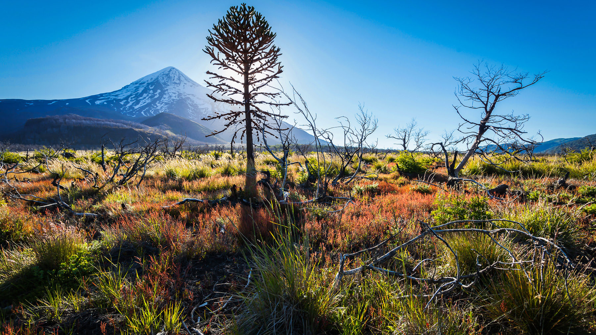
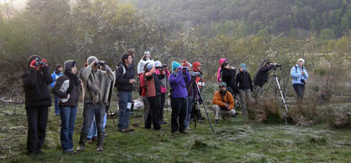

Peligra existencia de Araucarias en Chile: cambio climático dificulta su fotosíntesis
jueves 14 dciembre de 2017 | biobiochile.cl

"Las Araucarias de Chile no pueden fabricar “su alimento” producto del Cambio Climático. Evidencia inédita en el país pesquisada por científicos de Valdivia dan cuenta de una enfermedad en esta especie protegida.
Un equipo liderado por investigadores del Instituto de Ciencias Evolutivas y Ambientales de la Universidad Austral, tras un seguimiento por la alerta dada por Conaf, realizaron estudios en el Parque Nacional Congüillío, logrando determinar, con apoyo del Centro de Investigación en Ecosistemas de la Patagonia, que las especies están bajo el fenómeno “carbon starvation” que es un régimen de hambre en plantas.
El biólogo y doctor en ciencias, Mylthon Jiménez, confirmó a Radio Bío Bío que esta condición provocada por el cambio climático, decanta en las Araucarias que no pueden fabricar su alimento.
Curacautín y Lonquimay celebran por Cuarto Año Consecutivo el Festival de las Aves durante el mes de Octubre
jueves 14 dciembre de 2017 | Juan Carlos Bodoque

La Agrupación Cultural Huitral Mapu junto a CODEFF, el Comité Nacional Pro Defensa de la Fauna y Flora, han invitado a participar de una serie de Observación de las Aves durante todo el mes de Octubre en las Laguna de San Pedro en Lonquimay, de Malleco, del Parque Nacional Tolhuaca (Considerada sitio IBAS), de la Laguna de Captren del Parque nacional Conguillío.
La actividad esta enmarcada en el Proyecto FPA, del Fondo de protección ambiental del Ministerio del Medio Ambiente: “Las aves como indicadoras de Biodiversidad y promoción del Festival de las aves en Curacautín y Lonquimay” Esta actividad reunió a mas de 500 participantes entre alumnos de establecimientos educacionales de ambas comunas, de Victoria, de Ranquil, visitantes turistas de diferentes comunas del país, fotógrafos, vecinos del territorio. El proyecto cuenta con el apoyo de los colegios, de los municipios, de la CONAF, Región de la Araucanía y el patrocinio de “Cabañas y Hotel de Campo, Bosque Nativo”.